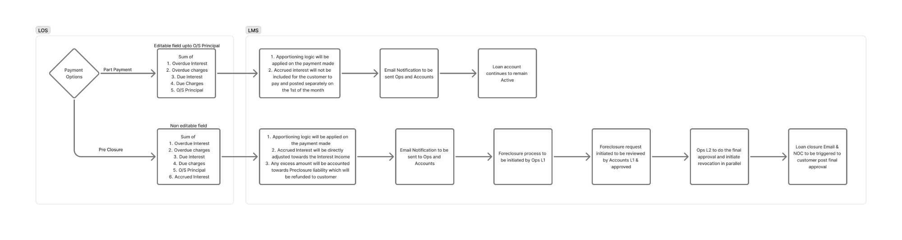

CompletedLast updated 16-11-2026 · Part payment and preclosure from LOS: payment type, amount rules, apportioning and accounting, notifications and the preclosure approval process in LMS.
1. Overview
The customer can pay towards the loan in LOS in two ways: a part payment or a preclosure. This BRD covers the changes in LOS,
the apportioning and accounting, the email notification, and the preclosure process in LMS.
2. Process flow

Part payment and preclosure – process flow in LOS and LMS
3. Changes in LOS
A new field called Payment type is given to the customer with two options to choose from: Part payment and Preclosure.
Part payment: the customer enters the amount to pay. The amount cannot be more than the sum of the overdue interest,
overdue charges, due interest, due charges and O/S principal.
Preclosure: the amount to pay is prefilled and cannot be edited. It is the sum of the overdue interest, overdue charges,
due interest, due charges, O/S principal and accrued interest.
Amount made up of
Part payment (editable, up to the total)
Preclosure (prefilled, not editable)
Overdue interest
✓
✓
Overdue charges
✓
✓
Due interest
✓
✓
Due charges
✓
✓
O/S principal
✓
✓
Accrued interest
–
✓
4. Apportioning logic and accounting
The apportioning logic stays the same and is applied on the payment made.
Part payment: the accrued interest is not included in the amount the customer pays. It is posted separately on the 1st of the month.
Preclosure: the accrued interest collected is settled directly to the Interest Income GL code, as this amount is not yet
posted to the customer’s account.
Any excess payment is settled to the Preclosure Liability GL code and is refunded to the customer. Normally this does not happen,
as both payment types restrict the amount.
5. Email notification
An email goes to the Ops and Accounts teams whenever the customer makes a part payment or a preclosure.
6. After a part payment
The loan account stays ACTIVE.
7. Preclosure process in LMS
Ops L1 starts the preclosure process after receiving the email about the preclosure payment, and only when the pending dues are 0.
If the pending dues are more than 0, the customer has to pay the remaining amount before the closure can go ahead.
If the pending dues are less than 0 (excess payment), the Accounts team is told about the excess payment so that it can be refunded.
Once Accounts refunds it, the refund is updated in LMS with the UTR number to clear the excess payment.
The preclosure request started by Ops L1 goes to the Accounts team (L1, L2 and L3) for review and approval.
After the Accounts approval, the final approval goes to Ops L2 and L3. The revocation (de-pledge) of the units is started at the same time.
After the final approval, the loan closure email and the NOC are sent to the customer.
8. System impact
LOS
Payment type field (Part payment / Preclosure); editable amount up to the total for a part payment; prefilled, non-editable amount for a preclosure.
LMS
Apportioning of the payment; Ops L1 preclosure start when dues are 0; Accounts L1 / L2 / L3 review and approval; Ops L2 / L3 final
approval; revocation in parallel; refund update with the UTR number for an excess payment.
Accounting
Accrued interest on preclosure to the Interest Income GL; excess payment to the Preclosure Liability GL and refunded.
Communication
Email to Ops and Accounts on every part payment and preclosure; loan closure email and NOC to the customer after the final approval.
Created by Azhagarsamy Subburaj. For any observation or clarification, please reach out to azhagarsamy.s@shriramcredit.in